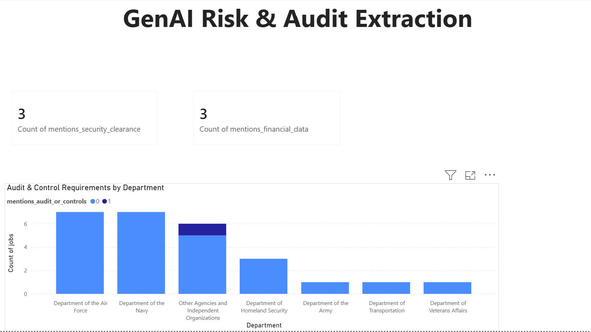

Federal Data Job Market & GenAI Audit Pipeline
An automated ETL & LLM pipeline that extracts live federal data postings from the USAJobs API, standardizes salaries and locations, uses the Gemini API for GenAI risk and compliance extraction, loads data into PostgreSQL, and visualizes insights across interactive Power BI dashboards.
The Business Problem
The federal government posts thousands of data-related jobs on USAJobs, but the unstructured text makes comparative analysis challenging. Job titles vary drastically ("Data Analyst," "IT Specialist (Data Management)," "Program Analyst"), salaries flip between annual ranges and hourly rates, and crucial compliance details—like security clearance levels, financial system access, and audit requirements—are hidden inside lengthy text descriptions. Traditional regex and keyword tools fail to catch nuanced phrasing. Anyone evaluating agency talent needs, risk profiles, or compensation patterns is forced to inspect postings manually.


What I Built
An end-to-end data pipeline augmented with Generative AI to deliver structured market reporting and automated risk/compliance extraction.
1. Extract & Transform
- Automated Data Collection: Ingested 5,500+ raw job postings across 12 federal data-role categories via the USAJobs API.
- Data Normalization: Cleaned locations, standardized job grade levels, and converted hourly wage scales into normalized annual salary ranges.
- Role Classification: Standardized multi-word job titles into core buckets (Data Specialist, Data Analyst, Data Engineer, Data Scientist, etc.), filtering out irrelevant postings.
2. GenAI Audit & Risk Extraction
- LLM Pipeline Integration: Passed raw job description text into the Gemini API to extract critical compliance and risk indicators.
- Signal Extraction: Automatically tagged requirements for Security Clearance, Financial System/Data Access, and Audit & Control Requirements by agency.
- Source Text Verification: Programmatically validated extracted LLM quotes directly against original job text before loading into database tables to prevent hallucinated data.
3. Load & Visual Reporting
- PostgreSQL Pipeline: Loaded clean structured records and LLM-extracted metadata into a relational PostgreSQL schema designed for incremental updates and duplicate prevention.
- Dual Power BI Dashboards: Built an interactive analytics suite featuring nationwide role distribution, compensation trends over time, state-level salary maps, and agency audit/security requirement breakdowns.
Key Architectural Decisions
Database Migration (Snowflake → PostgreSQL): I initially prototyped the data warehouse on Snowflake to test cloud data warehouse capabilities. To eliminate ongoing compute and cloud storage overhead for this personal project while keeping an enterprise-ready relational schema, I migrated the pipeline and table logic to PostgreSQL.
GenAI LLM vs. Traditional NLP/Regex: Standard regex and TF-IDF failed to distinguish between administrative security mentions and actual security clearance requirements. Utilizing structured prompting with the Gemini API enabled contextual quote validation and far higher precision for compliance extraction.
Results & Market Insights
- Data Specialist (60.1%) dominates federal job openings, followed by Data Analyst (16.89%), Data Engineer (12.8%), and Data Scientist (2.45%).
- Air Force & Navy lead defense-related audit requirements, showing the highest concentration of audit and internal control mentions in data postings.
- Full-Time roles represent 28.86% of employment types, while Shift Work, Part-Time, Intermittent, and On-Call roles form the remainder of federal hiring schedules.
- Role-based pay compression: Machine Learning Engineers and Data Engineers show tighter salary variance across federal pay scales compared to private-sector benchmarks.
Tech Stack
Repository Structure
├── Federal_Data_Job_Market_Analysis.pbix # Interactive Power BI dashboard file
├── GenAI_dashboard.png # GenAI risk & audit visualization screenshot
├── Dashboard.jpg # Market overview dashboard screenshot
└── README.md # Detailed repository documentation
What's Next
- Automate weekly pipeline execution and Gemini API batch processing via GitHub Actions.
- Expand GenAI extraction prompts to identify required technical stack skills (Python, SQL, AWS, Azure) directly from job descriptions.
- Add historical time-series storage to track federal data role salary inflation across quarter-over-quarter shifts.